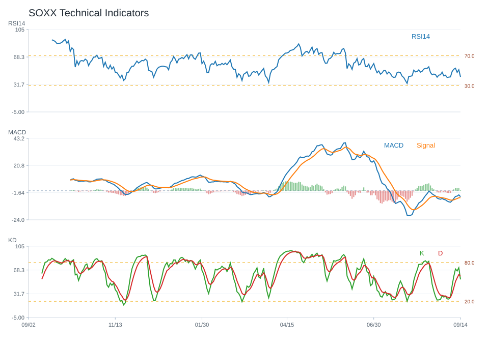

20 日
2.21%60 日
45.71%觀察等級
維持觀察市場資料
2026-07-07- 成交量11,947,900.00
- 20 日均線597.33
- 60 日均線527.63
- 200 日均線379.45
- 距 52 週高點-15.77%
- 距 52 週低點132.85%
技術指標
Python 計算- RSI1445.36
- MACD hist-10.25
- KD K/D27.80 / 38.57
- ADX16.78
- 布林上緣656.67
- 布林下緣537.98
量價與事件
規則式分析- 量價型態量能中性
- 量價分數0
- 20 日量比1.02
- OBV 20 日變化-4.88%
- 事件偏向事件偏空
- 事件分數-5
研究訊號與觀察等級
不是買賣建議維持觀察；研究訊號 中性，分數 -1。
正負條件尚未形成明確方向，維持一般追蹤。
- 60 日趨勢偏強
- 跌破 20 日均線
- 站上 200 日均線
- RSI 位於中性偏強區
- MACD histogram 為負
- KD 偏弱
- 量價型態：量能中性
- 量價未出現明確偏多或偏空結構
回測摘要
歷史資料研究| 策略 | CAGR | Sharpe | 最大回撤 | 勝率 | 交易次數 |
|---|---|---|---|---|---|
| 價格高於 200 日均線 | 32.50% | 1.11 | -38.13% | 54.74% | 12 |
| 20/60 日均線交叉 | 26.37% | 0.96 | -36.75% | 53.66% | 8 |
| 買進持有 | 49.05% | 1.24 | -41.36% | 54.36% | 1 |
圖表
價格 / 量價 / 技術 / 回測SOXX 價格均線

SOXX 量價關係

SOXX 技術指標

SOXX 回測